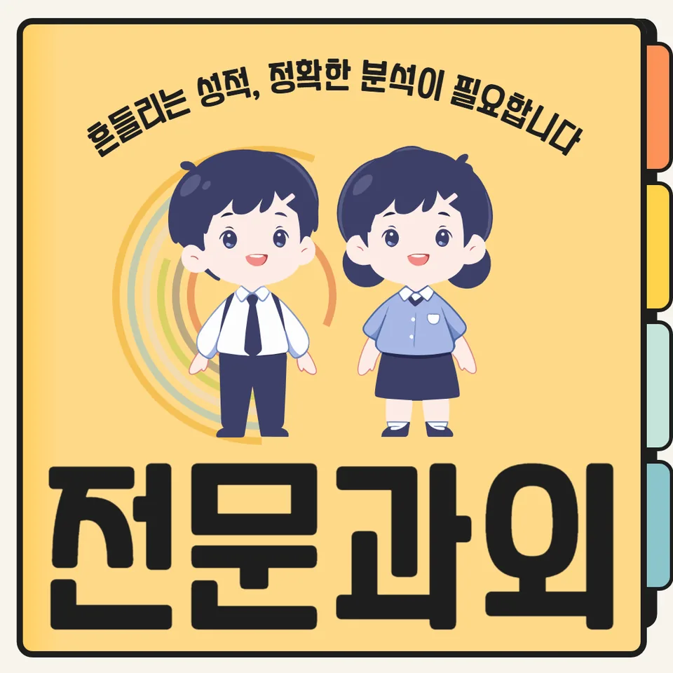

PageType : SUBJECT
URL : /경기도과외/양주시과외/덕정동과외/덕정동수학과외/
지역 교육환경이 수학 학습에 미치는 영향
덕정동수학과외를 찾는 학생들은 대체로 학원 밀집도와 학습 분위기 차이를 먼저 체감합니다. 학교 수업에서는 기본 흐름을 빠르게 가져가려는 경향이 있어, 같은 내용을 듣고도 학생마다 이해 속도가 달라지기 쉽습니다. 덕정동수학과외에서는 지역 학교의 수업 속도에 맞춰 ‘지금 내가 놓친 개념이 무엇인지’를 분명히 짚는 과정이 중요하게 다뤄집니다. 수학은 누적형이라, 초반에 생긴 빈틈이 시험 전후로 한꺼번에 드러나는 일이 잦습니다.
또한 가정에서 공부하는 방식이 지역 학습 문화와 영향을 주고받습니다. 수업 뒤 바로 문제로 넘어가려는 성향이 강한 집도 있고, 복습 시간을 충분히 확보하는 집도 있습니다. 덕정동수학과외는 이런 차이를 고려해 공부습관을 ‘맞추는 단계’부터 돕습니다. 예를 들어 학교에서 다룬 개념을 다음 날 다시 떠올릴 수 있도록 짧은 점검을 반복하면, 시간이 지나도 풀이가 낯설지 않게 유지됩니다.
학교별 평가 방식과 학습 방향
학교마다 내신 배점과 난이도 분포가 다르면, 학생이 집중해야 하는 지점도 달라집니다. 객관식 비중이 높은 학교라면 실수 줄이기가 곧 점수로 연결되고, 서술·과정형이 비중 있는 학교라면 설명 흐름을 안정적으로 정리하는 훈련이 필요합니다. 덕정동수학과외에서는 ‘무엇을 더 외워야 하는가’가 아니라, 어떤 평가 형식에서 어떤 사고가 요구되는지부터 점검합니다. 같은 단원이라도 시험에서 평가하려는 능력이 다르면 준비 순서가 달라지기 때문입니다.
수행평가 준비가 겹치는 시기에는 공부 시간이 분산되며, 이때 학생은 수학 학습이 뒤로 밀린다고 느끼곤 합니다. 덕정동수학과외는 일정이 흔들릴 때도 개념과 연습의 균형이 깨지지 않도록, 짧고 명확한 루틴으로 학습 방향을 잡아줍니다. 결과물의 완성도를 높이려면 문제 풀이만 늘리는 것이 아니라 수학 개념을 적용하는 사고 과정을 유지해야 합니다.
학생들이 수학을 어려워하는 주요 원인
학생들이 수학을 특히 힘들어하는 시기는 대개 ‘이해와 적용 사이’가 막힐 때입니다. 설명을 들을 때는 아는 것 같아도, 문제를 만나면 왜 그 방법이 맞는지 근거를 세우지 못합니다. 덕정동수학과외에서는 이런 순간을 학습 신호로 보고, 문제 해결 과정에서 막히는 이유를 언어로 풀어보게 합니다. 답을 맞히는 속도보다 사고의 연결이 끊기지 않게 만드는 것이 우선입니다.
또 하나의 원인은 오답을 단순히 ‘틀렸다’로 끝내는 습관입니다. 오답이 누적되면 같은 유형의 실수를 반복하며, 학생은 자신감이 서서히 줄어듭니다. 덕정동수학과외에서는 오답 분석을 사고 흐름 중심으로 정리합니다. 어떤 조건을 놓쳤는지, 어떤 개념을 잘못 적용했는지, 계산에서 왜 흔들렸는지를 나눠서 기록하면 다음 문제에서 행동이 바뀝니다.
학년 변화에 따른 수학 학습의 차이
학년이 올라갈수록 부담이 커지는 이유는 분량만의 문제가 아닙니다. 수학은 점점 더 복합적인 사고를 요구하며, 한 단원이 끝날 때까지의 흐름을 스스로 이어가는 능력이 필요해집니다. 덕정동수학과외를 통해 학습을 시작한 학생들은 “이전 학습이 바닥에 깔려 있어야 현재가 보인다”는 점을 자연스럽게 체감합니다. 그래서 상위 학년으로 갈수록 공부습관의 역할이 커집니다.
중간고사 전에는 문제 유형을 많이 풀고 싶어 하지만, 실제로는 개념을 다시 꺼내 쓰는 능력이 우선이 됩니다. 덕정동수학과외에서는 학년 변화에 맞춰 복습과 확장의 비율을 조정합니다. 처음에는 기본 확인이 중심이 되고, 이후에는 같은 개념을 다른 조건에서 적용하는 연습으로 사고력을 키웁니다. 이 과정에서 학생의 학습 부담은 줄어들기보다 “조절 가능해지는 형태”로 바뀝니다.
꾸준한 학습이 실력으로 이어지는 과정
수학 실력이 형성될 때는 대개 큰 사건보다 작은 반복이 누적됩니다. 학교 수업을 듣고 집에서 다시 한 번 개념을 정리하는 흐름이 자리 잡으면, 시험 기간에도 당황이 줄어듭니다. 덕정동수학과외에서는 계획을 거창하게 만들기보다, 매주 확인할 핵심을 정해 공부를 유지하도록 돕습니다. 공부 계획을 꾸준히 유지하는 과정에서 학생은 “수학 공부는 나만의 페이스로 관리할 수 있다”는 감각을 갖게 됩니다.
학부모가 가장 자주 느끼는 교육 고민은 ‘왜 같은 걸 해도 점수가 오르지 않지’라는 질문입니다. 이 질문의 답은 대체로 복습 타이밍과 연습의 질에서 갈립니다. 덕정동수학과외는 학습 기록을 통해 어떤 날에 개념이 고정되었는지 확인하고, 복습이 학습 성과로 이어지는 연결고리를 만들어갑니다. 시험 직전 몰아치기가 아니라, 시험 전까지 사고의 기반을 안정적으로 쌓는 방식입니다.
문제 해결력을 키우는 학습 습관
문제 해결은 결국 문제를 바라보는 관점의 훈련입니다. 덕정동수학과외에서는 풀이를 빨리 끝내는 습관보다, 문제를 읽고 조건을 정리하는 습관을 먼저 다집니다. 학생은 문제를 풀 때 필요한 수학 개념이 무엇인지 스스로 떠올리고, 그다음에 어떤 순서로 접근할지 결정하는 연습을 합니다. 이 과정이 반복되면 문제 해결력이 성장하는 체감이 생깁니다.
시간을 효율적으로 쓰려면 시험지 위에서 새로운 학습을 시작하면 안 됩니다. 미리 “자주 나오는 막힘”을 준비해두어야 합니다. 덕정동수학과외는 시험 기간 학습 패턴이 바뀌는 시점을 고려해, 평소에는 접근 전략을 점검하고 시험 전에는 오답 유형별로 사고를 정비하는 방식으로 움직입니다. 이때 사고력이 성장하는 학습 경험이 누적되며, 학생은 불안이 아니라 선택의 확신을 갖게 됩니다.
복습과 학습 관리가 중요한 이유
복습은 단순 재독이 아니라, 머릿속에서 개념이 다시 작동하게 하는 과정입니다. 학교 수업이 끝난 뒤 바로 정리하지 않으면 기억이 흐려지고, 이후에는 ‘안다고 생각한 부분’이 문제에서 다시 흔들립니다. 덕정동수학과외에서는 복습을 짧게 유지하면서도 꾸준히 반복하도록 설계합니다. 어떤 문제를 왜 틀렸는지까지 함께 돌아보면, 실수의 원인을 줄이는 방향으로 학습이 정교해집니다.
자기주도학습은 스스로 하려는 의지로만 생기지 않습니다. 학생이 무엇을 확인해야 하는지, 다음 행동이 무엇인지가 명확해야 자율성이 자리 잡습니다. 덕정동수학과외는 학생이 복습 체크리스트를 통해 오늘의 개념과 내일의 점검을 연결하도록 돕습니다. 학교와 가정에서 이어지는 학습 환경이 맞물릴 때, 공부습관은 자연스럽게 안정화됩니다.
수학 학습에서 확인해야 할 핵심 요소
학습에서 가장 먼저 봐야 할 핵심 요소는 ‘이해가 적용으로 이어지는가’입니다. 덕정동수학과외에서는 개념을 이해하고 활용하는 학습 과정이 실제로 작동하는지 점검합니다. 단순 암기만으로는 시험 상황에서 조건을 해석하지 못하는 문제가 생기기 쉽기 때문입니다. 그다음으로는 문제 해결 과정에서 학생이 어떤 결정을 하는지 확인합니다.
이와 함께 오답 관리의 품질이 중요한 기준이 됩니다. 같은 유형을 틀리더라도 원인이 계산인지, 조건 해석인지, 개념 적용인지에 따라 다음 훈련이 달라집니다. 복습을 통해 반복을 줄이고, 사고력을 키우는 방향으로 학습이 재정렬되면 학생의 성장 속도가 달라집니다. 학생마다 다른 성장 속도와 학습 과정이 존재한다는 점도 고려해, 과정을 기록하고 조정하는 습관을 함께 만듭니다.
- 학교 수업과 시험 범위에 맞는 학습 계획을 세우고 있는지 확인합니다.
- 개념을 암기하는 데 그치지 않고 문제 해결 과정에 활용하고 있는지 점검합니다.
- 틀린 문제를 다시 풀어보며 실수의 원인을 꾸준히 분석합니다.
- 단기 성과보다 지속적인 복습과 학습 습관을 유지하고 있는지 살펴봅니다.
자주 묻는 질문
수학 학습은 언제부터 체계적으로 준비하는 것이 좋을까요?
시험이 가까워질 때 시작하기보다는, 학교에서 새로운 개념을 배우기 시작할 때부터 이해-적용-복습의 흐름을 만드는 편이 유리합니다. 덕정동수학과외에서는 단원 초기에 빈틈이 생기지 않도록 짧은 점검으로 방향을 잡습니다.
학교 내신과 수행평가는 어떻게 함께 준비하면 좋을까요?
수행평가 일정 때문에 수학이 밀리는 시기에는 문제 풀이량을 무리하게 늘리기보다 핵심 개념을 유지하는 방식으로 조절하는 것이 좋습니다. 덕정동수학과외는 내신 학습 흐름을 끊지 않도록 복습 타이밍을 함께 설계합니다.
수학 개념이 부족한 학생도 학습 흐름을 따라갈 수 있을까요?
가능합니다. 중요한 것은 부족한 개념을 전부 다시 하려고 하기보다, 지금 배우는 단원에서 꼭 필요한 연결만 먼저 복원하는 것입니다. 덕정동수학과외는 사고가 막히는 지점을 기준으로 개념을 회복시키는 방식으로 진행합니다.
문제 해결력은 어떤 과정을 통해 향상될 수 있을까요?
문제를 읽고 조건을 정리한 뒤, 어떤 개념을 어떤 순서로 적용할지 스스로 결정해보는 과정이 누적될 때 성장합니다. 덕정동수학과외는 풀이 결과보다 문제 해결 과정의 선택을 반복 훈련하도록 돕습니다.
꾸준한 학습 습관은 어떻게 만들어갈 수 있을까요?
매번 의지를 새로 세우기보다, 확인할 항목이 정해진 루틴을 유지하는 방식이 안정적입니다. 덕정동수학과외에서는 자기주도학습이 자리 잡도록 복습과 오답 점검을 짧게 반복하며, 학생이 다음 행동을 스스로 정하도록 이끕니다.
